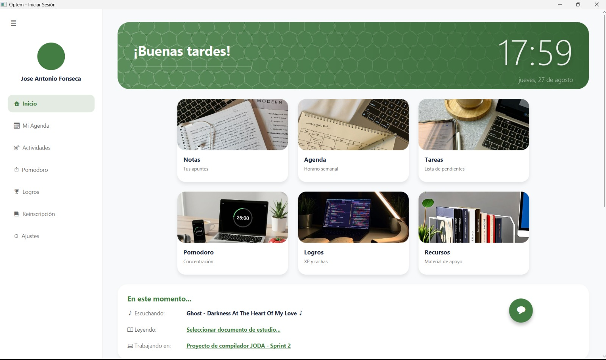
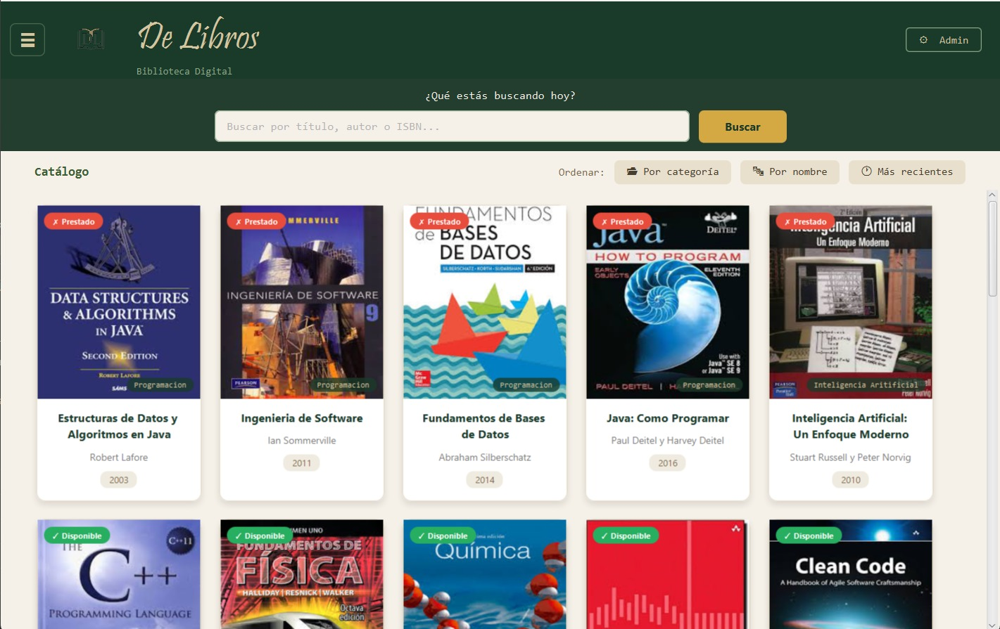

Inicio
Estudiante de Ing. en Software
Alexis Gethsemani Hernández Hernández
Universidad Autónoma del Estado de México
Bienvenidos a mi Portal Académico y Profesional
Soy Alexis Gethsemani Hernandez Hernandez, estudiante de quinto semestre de Ingeniería de Software en la UAEMéx, enfocado en la creación de soluciones tecnológicas, el diseño de sistemas y la resolución eficiente de problemas. Me especializo en analizar desafíos, identificar oportunidades de mejora y desarrollar soluciones funcionales mediante la programación, las buenas prácticas de software y el uso estratégico de herramientas de Inteligencia Artificial. En este portal encontrarás mis proyectos académicos, habilidades técnicas y experiencia en el análisis, diseño y desarrollo de sistemas, demostrando mi capacidad para adaptarme a nuevos retos, optimizar procesos y transformar ideas en soluciones concretas que respondan a las necesidades del entorno institucional y empresarial.
Perfil Profesional y Académico
Me he formado sólidamente en la Universidad Autónoma del Estado de México (UAEMéx), desarrollando un perfil enfocado en la ingeniería de software de alta calidad, la gestión eficiente de proyectos y la innovación tecnológica. Asimismo, integro de forma activa el uso de diferentes Inteligencias Artificiales (IAs) como herramientas clave para potenciar la productividad, el análisis de requerimientos, la optimización de código y la toma de decisiones informadas.
Liderazgo de Grupos
Capacidad demostrada para coordinar y guiar equipos de trabajo multidisciplinarios, fomentando la colaboración activa, organizando tareas técnicas y orientando los esfuerzos grupales hacia el cumplimiento exitoso de los objetivos institucionales y de desarrollo de software.
Resolución de Conflictos
Habilidad analítica para identificar discrepancias técnicas u organizacionales de manera oportuna, aplicando una comunicación asertiva, negociación y mediación estratégica para transformar los desafíos en soluciones funcionales y armoniosas dentro del equipo.
Habilidades Técnicas y Competencias (Clic para ver certificado):
Proyectos Académicos

'">OPTEM
Agenda académica virtual

Compilador JODA
Diseño de lenguaje y compilador

'">De Libros
Plataforma de biblioteca digital
Título
Descripción...
Enlaces de Interés UAEMéx
Accesos directos a los principales portales de la Universidad Autónoma del Estado de México y comunidades académicas.
Información de Contacto
Canales de comunicación directa:
- ■ Email Institucional / Personal: alexisgethsemani@gmail.com
- ■ GitHub: Azathoth-AGHH
- ■ LinkedIn / Redes: Perfil Profesional